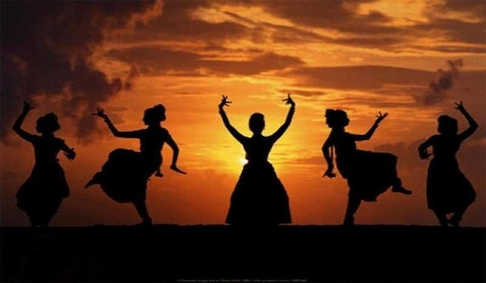
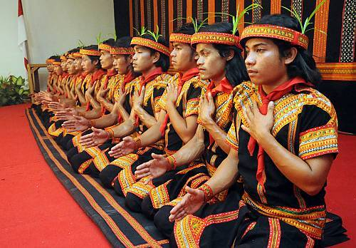
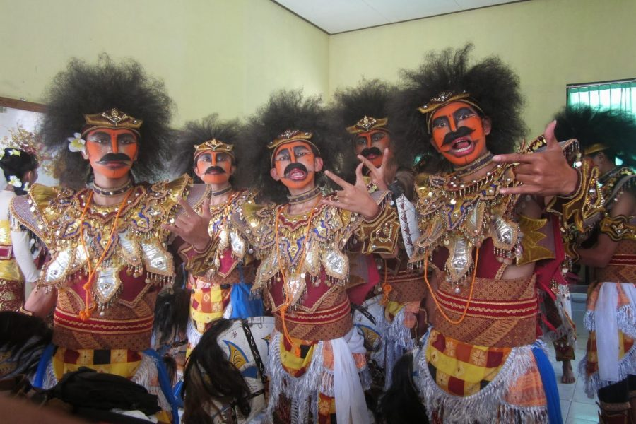

Fungsi Seni Tari
Seni tari memiliki beberapa fungsi. Apa saja fungsi dari seni tersebut? Berikut ulasanya. Tari pertunjukan Yaitu tari yang disiapkan untuk suatu acara dan dipentaskan. Tarian ini menonjolkan dari sisi koreografi artistik, konsep yang bagus dan ide yang matang. Serta tema yang tertata sedemikian rupa sehingga tarian tersebut menjadi menarik dan indah.
Tari upacara Yaitu tarian yang dilakukan hanya pada upacara adat maupun acara yang bernuansa keagamaan. Tarian ini mengutamakan adanya ke khidmatan dan komunikasi pada Sang Pemilik Alam.
Tari hiburan Yaitu tarian yang diadakan hanya untuk menghibur penonton saja. Biasanya tarian ini dimainkan dengan alunan musik dan irama yang enak didengar. Gerakan tarinya juga bebas dari berbagai macam nilai, tradisi, atau adat. Yang terpenting dari tarian ini adalah mampu menghilangkan rasa jenuh para pendengar atau penonton.
Tari pergaulan Yaitu tarian yang dimainkan untuk berinteraksi ke sesama saja. Tarian ini biasanya digunakan untuk saling adu unjuk rasa dalam kesenian. Dalam gerakanganya juga terlihat lincah dan memiliki sifat komunikatif. Sehingga mampu memberikan interaksi atau timbal balik ke sesama.
Tari kesenian Yaitu tarian yang dilaksanakan untuk tujuan pelestarian budaya. Biasanya tarian ini bernuansa tradisional. Karena menghargai warisan budaya penggilan nenek moyang pada zaman dahulu. Tarian ini hanya dipentaskan pada saat hari atau momen kebudayaan saja.
Jenis-Jenis Seni Tari
Seni tari juga dibedakan berdasarkan genre atau alirannya. Dalam hal ini mencangkum aliran gerakan tarian itu sendiri dan variasi musik yang dibawakan. Aliran seni tersebut dapat dikelompokan menjadi lima kategori. Tari tradisional Seni tari tradisional yaitu tarian yang diwariskan dari masa ke masa sejak zaman dahulu, yang dilestarikan lalu menjadi budaya di sebuah daerah. Dalam tarian tersebut terdapat nilai, filosofi, simbol dan unsur religius. Tari tradisional biasanya tidak berubah dari masa ke masa. Dari segi pakaian tari, rias, kostum, dan tarian itu sendiri. Karena tarian seperti ini biasanya salah satu tujuannya adalah agar tetap terjaga dan tidak hilang dimakan zaman.
Unsur-Unsur Seni dalam Tari
Suatu gerakan tidak bisa dikatakan sebagai tarian bila tidak memenuhi tiga unsur. Jika salah satu saja dari unsur tersebut tidak ada, maka gerakan tersebut tidak bisa dikatakan sebuah tari. Apa sajakah unsur tersebut?
Wiraga (Raga) : Sebuah tarian harus menampakkan gerakan badan, baik dengan posisi duduk ataupun berdiri.
Wirama (Irama) : Sebuah seni tari harus memiliki unsur irama yang menyatukan gerakan badan dengan musik pengiringnya, baik dari segi tempo maupun iramanya.
Wirasa (rasa) : Sebuah seni tari harus mampu untuk menyampaikan sebuah perasaan yang ada di dalam jiwa, melalui sebuah tarian dan gerakan juga ekspresi penarinya.Gerakannya diambil dari langkah-langkah dalam silat Minangkabau atau silek.